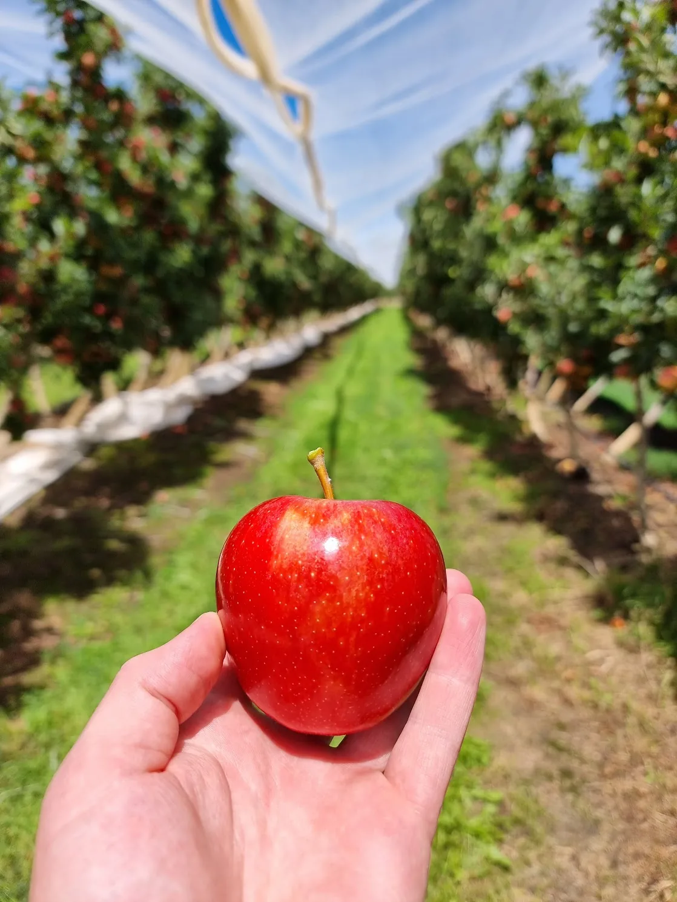
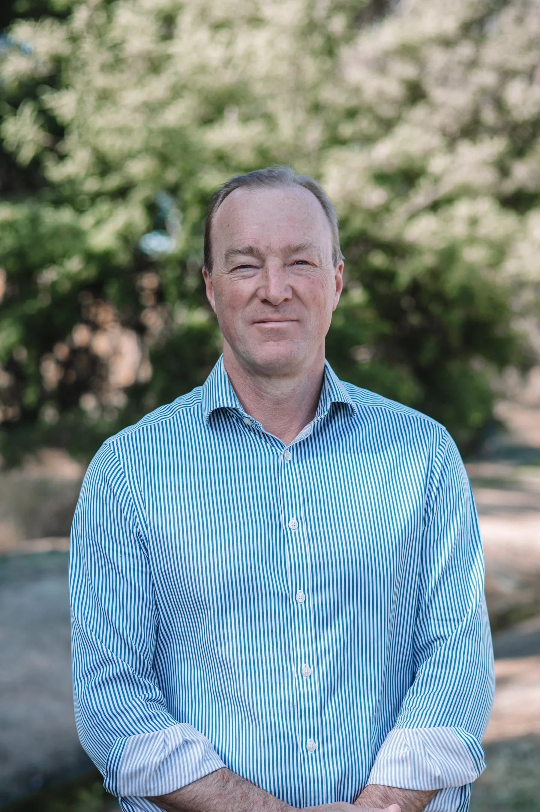

About us
Precision nutrition for your soil and crop.
We work with growers to understand what their soil and crop need, then develop prescription blends using test results and agronomic advice. Improving the quality of the food we grow remains central to why Hybrid-Ag began.
Our Heritage
How Hybrid-Ag began.
Hybrid-Ag began with Tom Rowe’s search for better health, and the questions it raised about the food he was eating.

His search led him to look beyond the food itself to the soil it came from. Tom and his family began exploring the connection between soil mineral balance, plant health and the quality of the food we grow.
For Tom, it was not enough to look at how food was grown without also asking what it contained. He wanted to understand how the mineral balance and biological health of the soil could influence the plants grown in it. That became the question behind Hybrid-Ag.
The business began in Melbourne in 2001, focusing on soil analysis and custom-tailored nutrition for growers. As demand for the service grew, Hybrid-Ag moved to Wangaratta in North East Victoria, where the team is based today.
Prescription blends have been central to that work from the beginning. The aim is to understand what a particular paddock or block needs, then develop a blend suited to those requirements and the grower’s plans. Soil test results guide that discussion, rather than a standard mix being the starting point.
The purpose extends beyond supplying fertiliser. Tom’s interest is in the quality of the food being produced and what it can mean for the people who eat it.
Hybrid-Ag was founded to help growers produce better food by improving soil health.
Testing and interpretation
Testing gives us a starting point.
Different tests answer different questions. We look at the results alongside your crop and growing conditions before making a recommendation.
Soil conditions
What does your soil test tell you?
A soil test measures conditions in the sampled area. Depending on the test selected, results include pH, Carbon, holding capacity and Nutrient levels. We consider the sampling depth and test method when interpreting the results for your paddock or block.
Explore soil testing- What it shows
- What do the results show about the soil in this area?
- How it helps
- Which Nutrient requirements to consider for a prescription blend, and whether further testing is needed.

Understanding soil health
Physical. Mineral. Biological.
Soil structure affects the movement of air and water and the growth of roots. Minerals and biological activity also influence the soil environment. We consider these together when discussing your soil and crop nutrition.
PhysicalThe rooting environment
MineralBalance and availability
BiologicalLife in the soil
Planning crop nutrition
Position. Pattern. Plan.
The results need context. These questions help us work through the information with you.
Where are you now?
Start with the results you have and the crop or soil issue you want to address.
How did you get here?
Look at previous tests and applications alongside changes in the crop and growing conditions.
What should happen next?
Discuss the Nutrient requirements, a suitable prescription blend and when to review progress.

Our Commitment
Advice that relates to your farm.
We work with you to understand what you want to achieve on your farm. Testing helps inform the discussion; your knowledge of the farm matters too.
- Use soil and plant testing, together with your farm history, to understand the Nutrient requirements.
- Develop prescription blends for your soil and crop, with your budget and application equipment in mind.
- Consider soil structure, mineral balance and biological activity together, rather than treating one in isolation.
- Discuss the timing of applications in relation to crop stage, and review test results with you through the season.
- Explain our recommendations and share the research and practical experience behind them, so you can make informed decisions.
- Consider the cost of inputs alongside what you want to achieve in crop quality and yield.
- Build an ongoing working relationship, learning from your feedback and what happens on your farm.
Food quality
Transforming Food for Health
Tom’s vision is for the Nutrient content of food to receive more attention, alongside the qualities we can see.
The aim is to help growers put that knowledge to use on their farms, and give consumers a better understanding of the food they choose. Our work on soil health and prescription nutrition is part of that purpose.
There is still much to learn about how to measure food quality and how soil health and plant nutrition influence it. We want to keep asking those questions and sharing what we learn.
Talk to us about food quality
Talk to the team
Talk to us about your crop.
Already have test results? Bring them to the discussion. If you need testing, we can help you choose where to start.